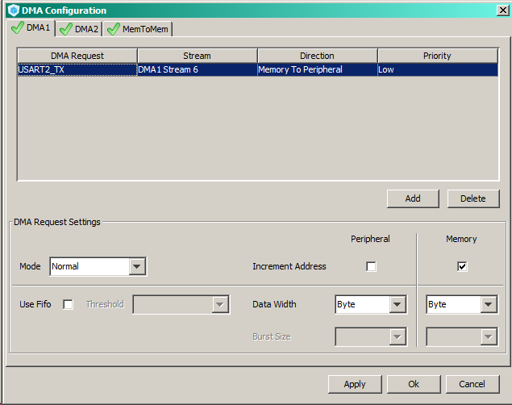
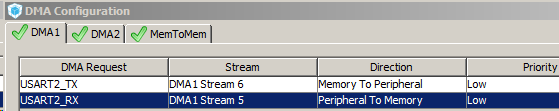
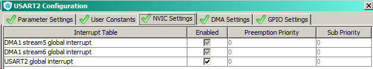

В кубе включаем UART2 в асинхронном режиме, подтягиваем прерывание.
Заходим в настройки DMA1 и выбираем USART2_TX:

По поводу Stream 6... Заглядываем в референс мануал и находим раздел 10.3.3 Channel Selection. Таблица для DMA1 показывает, что USART2_TX обслуживается Channel 4 - Stream 6. Куб же настраивает это все автоматически.
Генерируем код.
Попробуем передать данные через функцию HAL_UART_Transmit_DMA. Параметры те же, что и в HAL_UART_Transmit, только без указания таймаута.
/* USER CODE BEGIN 1 */
uint8_t helloString[] = "USART Transmit DMA\r\n";
/* USER CODE END 1 */
/* USER CODE BEGIN 2 */
HAL_UART_Transmit_DMA(&huart2, helloString, 20);
/* USER CODE END 2 */
Контроллер должен отдавать при включении сообщение USART Transmit DMA.
Теперь в DMA подключаем и отправку.

При этом в настройках UART2 автоматически появляют включенные прерывания по DMA_TX и DMA_RX:

Генерируем проект.
Для визуализации приема данных МК подключаем библиотеки LCD.
Добавляем приемный буфер:
/* USER CODE BEGIN 1 */
uint8_t helloString[] = "USART Transmit DMA\r\n";
uint8_t receivedBuffer[17] = {0};
/* USER CODE END 1 */
17 значений в массиве: 16 по количеству символов, отображаемых дисплеем + 1 ячейка для символа конфа строки.
Инициализируем дисплей, отдаем приветствие и принимаем 16 байт данных.
/* USER CODE BEGIN 2 */
lcdInit();
HAL_UART_Transmit_DMA(&huart2, helloString, 20);
HAL_UART_Receive_DMA(&huart2, (uint8_t*) receivedBuffer, 16);
/* USER CODE END 2 */
Как только пакет из 16 байт будет получен, программа уйдет в прерывание и поменяет состояние своего флага hdma_usart2_rx.State на HAL_DMA_STATE_READY.
Отслеживая данный флаг, можно обрабатывать пакеты 16-байтных данных. В данном случае мы выводим содержимое буфера на дисплей:
/* USER CODE BEGIN WHILE */
while (1)
{
/* USER CODE END WHILE */
/* USER CODE BEGIN 3 */
if(hdma_usart2_rx.State == HAL_DMA_STATE_READY)
{
lcdSendCmnd(0x01);
lcdSendCmnd(0x02);
for(uint8_t i = 0; i < 16; ++i)
{
lcdSendCode(receivedBuffer[i]);
receivedBuffer[i] = 0;
}
HAL_UART_Receive_DMA(&huart2, (uint8_t*) receivedBuffer, 16);
hdma_usart2_rx.State = HAL_DMA_STATE_BUSY;
}
}
/* USER CODE END 3 */
В блок if программа не попадет до тех пор, пока флаг не примет значение HAL_DMA_STATE_READY, т.е. не будет получено 16 байт.
После этого необходимо снова запустить DMA (HAL_UART_Receive_DMA) и обязательно вручную выставить флаг HAL_DMA_STATE_BUSY.
//-------------------------------------------
Суть в том, что DMA работает независимо от процессора. И мы можем принимать и записывать данный в память без прерывания выполнения основной программы. Процессорное время понадобится только после того, как пакет данных будет записан полностью и потребуется его как-то обработать.